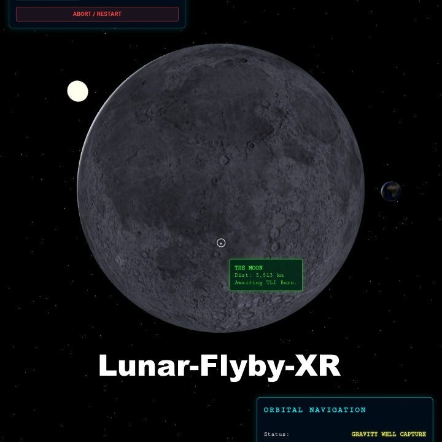
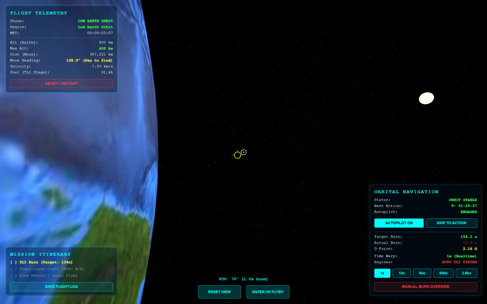
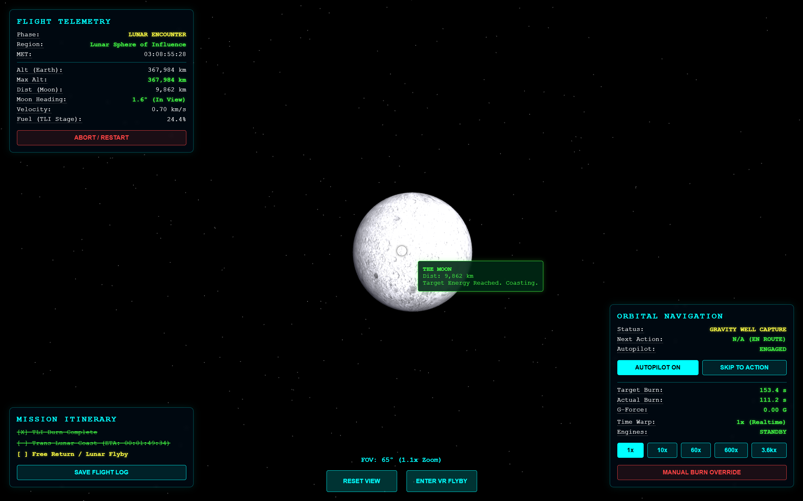
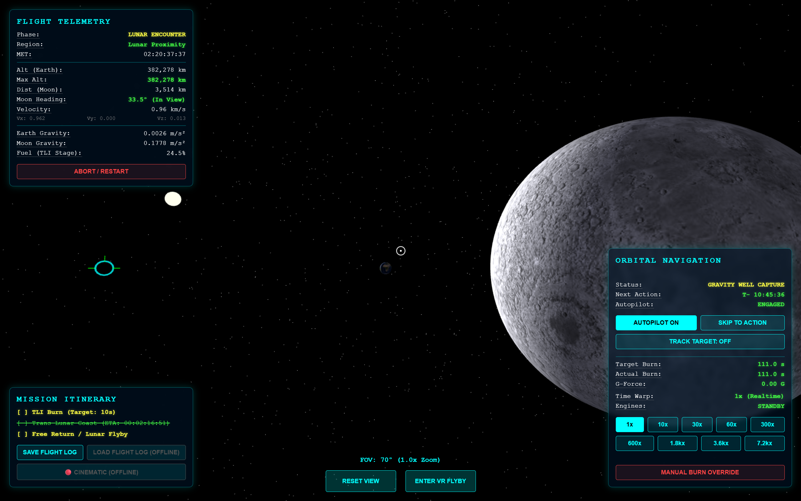
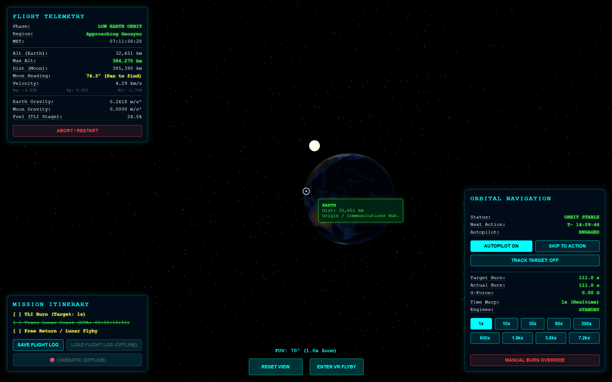
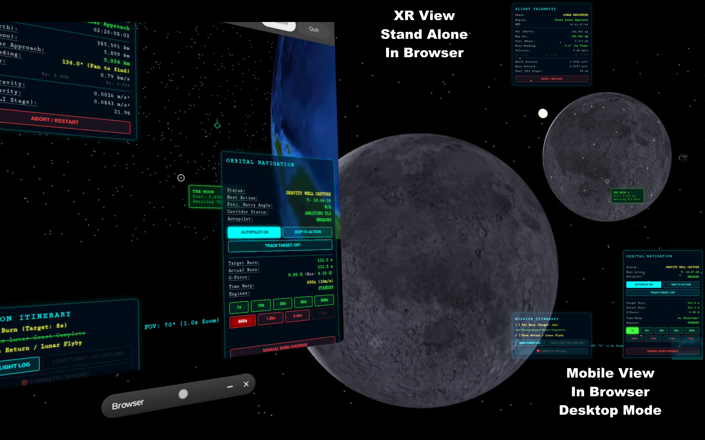

Artemis: The Free Return
Take the commander's seat in Low Earth Orbit, unleash 111 seconds of thunderous Trans-Lunar Injection burn, and drift across the silent cislunar void. Feel your stomach drop as the Moon's colossal gravity well grabs your ship on close approach, hurtling you around the cratered far side into total radio blackout—before slinging back toward Earth at 25,000 mph to thread a razor-thin 2° atmospheric reentry keyhole. 100% unscripted Newtonian physics—zero pre-baked animation rails.

📺 Gameplay Telemetry Stream (8x Speedrun)
Watch the complete 800,000 km cislunar free return trajectory—from LEO parking orbit, Trans-Lunar Injection (TLI), midcourse corrections, perilune far-side blackout, and 25,000 mph atmospheric reentry splashdown.





📖 Mission Briefing & Director's Cut
What does it truly feel like to leave Earth behind? Pointing toward the second star to the left, take the controls of Artemis II in Low Earth Orbit and unleash 111 seconds of thunderous Trans-Lunar Injection burn to drift across the silent cislunar void. With most of your propellant spent, the only thing standing between you and the cold oblivion of deep space are a few critical midcourse corrections to thread the needle for a gravitational slingshot around the Moon and safely return to Earth.
Experience the awe of deep space as the Moon swells to fill your entire field of view—and feel your stomach drop as its colossal gravity well grabs your ship on close approach, hurtling you around the lunar far side. As Earth vanishes behind the cratered horizon and total radio blackout falls, you realize that everything humanity has ever been is hundreds of thousands of miles away... and you can only hope the math is right to sling you back toward the only home we've ever known at 25,000 mph.
With unscripted Newtonian physics, final trajectory adjustments, and active aerodynamic lift-banking standing between you and disaster, you must thread a razor-thin 2-degree reentry keyhole through scorching atmospheric plasma. Far more than just a simulation, it becomes an awe-inspiring, heart-pounding WebXR journey among the stars.
🎙️ Director's Statement
"For as long as I can remember, I have looked up at the Moon and dreamed of what it feels like to leave Earth behind. When the private dearMoon lunar mission was canceled, I felt a deep ache—not just for myself, but for the millions of dreamers who yearn to experience deep space. I realized that if the doors to commercial lunar flight were closing, I had to open a new one through code.
I built 'Artemis: The Free Return' to place everyday people in the commander's seat. I refused to put the spacecraft on pre-baked animation rails; the universe doesn't have rails. By calculating dynamic Newtonian gravity and active aerodynamic drag in real time, the simulation honors the true danger, math, and silent awe of cislunar flight. When you watch our fragile blue world vanish behind the lunar limb, my hope is that you feel both the terror of the void and the profound realization that we are all travelers on the same small island in the dark."
— Larry James Wulf, Lead Systems Architect & VR Experience Director // UpLiftVR & Wulf Design Studios
🎮 Verified Flight Controls & Avionics Matrix
Authentic Cockpit Avionics & HUD Systems (From sim.html)
| HUD Control / Button | System & Trigger | Operational Behavior & Physics Gating |
|---|---|---|
AUTOPILOT ON / ENABLE AUTO TMI#btn-toggle-auto
|
Autopilot Toggle | Toggles automated TLI burn sequencing, midcourse correction scheduling, and automated atmospheric bank angle guidance. |
AUTO WARP: ON / OFF#btn-auto-warp
|
Warp Automation | Dynamically regulates simulation speed based on orbital phase. Clamps to $\le$30x during burns and 1x during burns, holds, and entry interface. |
|
1x 10x 30x 60x 300x 600x 1.8kx 3.6kx 7.2kx |
9 Time Warp Speeds |
3-Tier Safety Gating with 1.0s Hermite Smoothstep Gliding: • Tier 1 (Safe / Green): Speeds $\le$ max safe limit automatically ramped by Auto-Warp. • Tier 2 (Advisory / Yellow): Cautionary speeds honored without safety prompt. • Tier 3 (Danger / Red): Requires double-click confirmation (CONFIRM prompt). 7.2kx disabled outside deep cislunar space. |
SKIP TO ACTION#btn-skip-window
|
Mission Fast-Forward | Instantly accelerates time warp to the maximum permissible safe gear (maxSafeWarp) to advance to the next critical waypoint. |
| EXECUTE TRAJECTORY ALIGNMENT | MCC Vector Correction | Triggers midcourse correction burn (or countdown auto-alignment) executing iterative transverse $\Delta V$ calculation aiming for a 40 km perigee corridor. |
MANUAL BURN OVERRIDE#btn-thrust
|
Press & Hold Throttle | Ignites primary rocket thrusters for as long as button/pointer/touch is held down. Consumes remaining propellant mass. |
BANK UP (REDUCE Gs) #btn-lift-upBANK DOWN (STEEPEN) #btn-lift-down
|
Reentry Gimbal Banking | Active aerodynamic lifting-body trim during atmospheric entry (<122 km). Commands offset Center-of-Gravity gimbal bank angle ($-90^\circ$ to $+90^\circ, L/D \approx 0.25$) to limit G-loads or prevent atmospheric skip-out. |
| Click + Drag / Mouse Scroll | Free Orbital Camera | 360° click-and-drag yaw/pitch rotation around the spacecraft. Mouse wheel adjusts field-of-view (FOV zoom from 10° telephoto to 100° wide-angle). |
| RESET VIEW | Camera Recenter | Resets orbital camera pitch, yaw, and FOV to nominal trailing spacecraft chase perspective. |
TRACK TARGET: OFF / ON#btn-track-target
|
Target Tracking Gimbal | Smoothly aligns the camera to track designated celestial bodies: Earth, Moon, Sun, or the instantaneous spacecraft Prograde velocity vector. |
| ENTER VR FLYBY | WebXR Immersive 6DoF |
Activates stereoscopic WebXR 6DoF session on Meta Quest Browser. • Controller 0 (Primary) Trigger: Fires main rocket engines (selectstart / selectend). • Controller 1 (Secondary) Trigger: Toggles target tracking lock. |
ABORT / RESTART #btn-abortSAVE FLIGHT LOG #btn-save-log
|
Mission Reset & Logging |
• ABORT: Re-initializes state vectors to 400 km LEO parking orbit. • SAVE FLIGHT LOG: Exports comprehensive telemetry history as a downloadable JSON file. |
Flight operations are executed exclusively through the on-screen telemetry buttons, mouse/touch drag navigation, and WebXR 6DoF controller triggers. There are NO keyboard shortcut mappings (such as keyboard throttle, camera keys, or pause keys) in the simulation engine. All mission functions are operated through genuine interactive cockpit avionics interfaces.
🏆 Official 2026 Showcase Pedigree & Exhibitions
Artemis: The Free Return has been curated and exhibited across premier Pacific Northwest gaming, aerospace, and interactive media showcases:
SLICE 2026
Tabletop & interactive media exposition. Hands-on public preview of the real-time cislunar orbital mechanics engine.
SiM PAX West Kickoff Showcase 2026
Industry WebXR showcase and developer network triage during PAX West weekend.
KremFest XR 2026
Official Selection & Turnkey Autopilot World Debut. Featured in the 15-page bound festival program guide, running live on standalone Meta Quest 3 headsets.
Seattle Space Week 2026
Featured educational visualization demonstrating unscripted Newtonian gravitational mechanics for museum and institutional partners.
GeekGirlCon 2026
Exhibiting in the Seattle Indies Gaming Hall. Speaking panel: Sunday Oct 25 @ 1:30 PM (Room 'America'). Tabletop acrylic signage and WebXR demo.
🗺️ Technical Roadmap & Planned Cislunar Missions (V2.0 / V3.0)
Upcoming orbital mission profiles, avionics upgrades, spatial rendering enhancements, and our Consumer Deep Space CubeSat initiative:
Lunar Orbit Insertion (LOI) & Return
Execute a retrograde perilune capture burn to enter Low Lunar Orbit instead of a passive Free Return, conduct multi-orbit lunar reconnaissance, and fire a timed Trans-Earth Injection (TEI) burn for Earth return.
Earth–Moon Cycler Orbit
Navigate a repeating cislunar gravity-assist cycler trajectory that shuttles continuously between Earth and Moon encounters using minimal station-keeping propellant.
Lunar Gateway NRHO Rendezvous & Docking
Insert into a Near-Rectilinear Halo Orbit (NRHO), match phase vectors with the Lunar Gateway station, and execute 6DoF proximity approach and docking.
Lagrangian Points (L1–L4) & Custom Delta-V
Plot custom maneuver nodes across the Earth–Moon 3-body gravitational potential well, station-keeping in L1/L2 halo orbits and L4/L5 Trojan equilibrium pockets.
3D NASA Cockpit, Orthographic Minimap & Hipparcos Sky
Interactive 3D WebXR flight deck with authenticated NASA Orion/SLS GLB meshes, dual trajectory trail minimap (flown vs. predicted orbit), and 1:1 lunar tidal locking.
Decoupled RCS Attitude & Historical / Mars Profiles
Uncouple spacecraft attitude from the prograde vector for manual Yaw/Pitch/Roll RCS thrusters across Apollo 13 Emergency Recovery, Apollo 11 Powered Descent, and Mars Aerobraking Corridor scenarios.
6U/12U Cislunar CubeSat Digital Twin & Flight Telemetry Log Upload
Artemis: The Free Return serves as the interactive orbital visualization and telemetry testbed for our long-term Consumer Deep Space 6U/12U CubeSat initiative—combining high-performance COTS mobile SoCs with a radiation-tolerant FPGA hardware watchdog for real cislunar flight. Pilots can export JSON flight logs (SAVE FLIGHT LOG) and submit mission telemetry directly through the Pilot Intake & Telemetry Terminal below.
💻 📱 🥽 Play on Desktop, Tablet & Phone — or Step Inside in VR / XR
Artemis: The Free Return is engineered first and foremost to be 100% accessible right in your web browser on any Desktop, Laptop, Tablet, or Smartphone with zero downloads or installs required. And when you're ready for a truly profound stereoscopic experience, launch it inside a WebXR headset (such as the Meta Quest 3 / 3S, PCVR, or Vision Pro) to sit physically inside the cislunar flight deck.
🎖️ Cockpit Backer Plaque Tier
Become an immortal part of the spacecraft! For a modest patron micro-pledge ($5–$15), have your Commander Callsign permanently engraved onto the 3D in-cockpit memorial plaque inside the WebXR flight deck, receive a personalized digital mission patch certificate, and gain priority access to upcoming closed beta releases.
📬 Artemis Flight Test Channel // Pilot Intake, Telemetry & Mission Poll
Register your callsign on the official Artemis: The Free Return (Lunar Flyby XR) flight roster to receive mission updates, vote on upcoming cislunar trajectories (such as Lunar Orbit & Return or the Earth–Moon Cycler), and log your flight telemetry debriefs across Desktop, Mobile, or XR.
🎉 Flight Clearance Confirmed // Submission Recorded in Google Forms!
Thank you, Commander! Your submission has been automatically recorded into the Mission Control Google Form database (no second submission required).
Dual-layer persistence confirmed: Local cache registered • Dispatched to dedicated Artemis Google Form intake engine.
Need to send another copy or verify via Google Forms UI? Open Pre-Filled Google Form Backup ↗